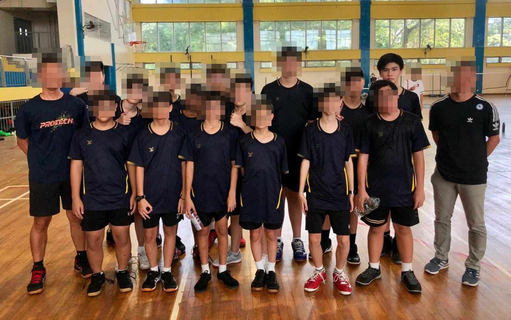

Why cybersecurity
Crime used to happen on land, at sea and in the air. Today it also happens online, and that shift is what drew me to cybersecurity. I enjoy technology, especially AI, and I wanted to understand how the digital world is attacked and how it can be protected.
I am naturally curious and enjoy solving problems, which is also why I like maths. Hacking appeals to me for the same reason: it is a puzzle you work out on your own. To test a website, I think like the developer who built it and look for the gaps they missed. To defend it, I think like the attacker and predict their next move. Switching between those two views is what keeps me interested, and it is the mindset I want to bring to securing real systems.
How I work
Leader
Team leader in all my academic group projects, coordinating members to meet shared goals.
Trusted
At Madam Ling Bakery, my supervisor entrusted me to train new staff on warehouse operations and answer their queries on the floor.
Flexible
Switched between picking, packing, sorting and quality-check roles during the peak season. Able to work shifts when required, including overnight shifts.
Leadership through sport
As captain of the Serangoon Garden Secondary School badminton team from 2022 to 2024, I guided teammates during training sessions and matches. I continue to train in badminton to date.
